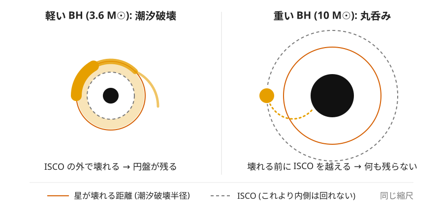
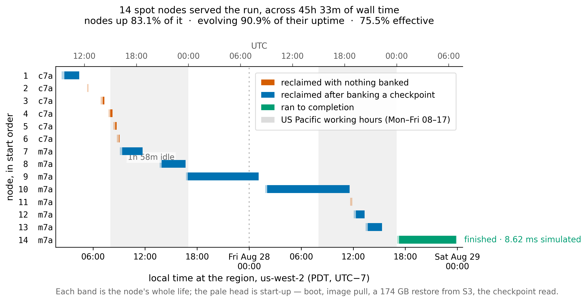
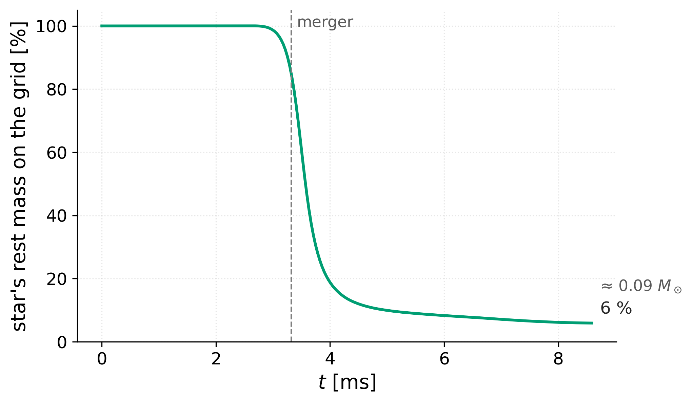

### 円盤になったのか、 ### 丸呑みされたのか #### 〜ブラックホール・中性子星合体(GW230529)をシミュレーションしてみた〜 --- ### 自己紹介 <div class="profile-container"> <div class="profile-left"> * さめ (мег-сск) * ⚛️ VRChat 物理学集会の主催 * 🧑🎓 社会人学生として通信制大学在学中 * 得意分野: * 📸 コンピュータビジョン (画像認識/点群処理) * 🌍 空間情報処理 (地理情報/リモートセンシング) * ☁️ クラウドインフラ設計/IaC (AWS, GCP) * 学生時代は地球物理学を専攻 * 地球観測技術のエンジニアとして活動中 </div> <div class="profile-right"> <img src="assets/images/icon_circle.png" alt="avatar" height="350px" width="350px"> </div> </div> --- ### お久しぶりです！ <div class="simple-box"> * 物理学集会は 6〜9 月、お休みしていました * **約 3 ヶ月ぶり**の開催です 🎉 * お休みの間も、裏では計算機を回していました 🖥️ * 今日はその話をします </div> <div class="highlight-box"> またゆるく、物理の話をしていきましょう </div> --- ### 前回やり残したこと <div class="simple-box"> * 前回 (BH + BH) は**解像度を下げて**自宅 PC で完走 * 本当は**中性子星**もやりたかった * **物質も動く**ので、粗くすると再現できなさそう * 公式どおりクラウドで回すと**約 300 USD** * 自由研究には高すぎる……と断念 </div> <div class="highlight-box"> 今回、その<strong>半額以下 (136 USD)</strong> で完走できた </div> --- ### 今日話すこと <div class="simple-box"> * 前回の続編: **ブラックホール + 中性子星 (GW230529)** * 星が**引き裂かれる**様子を計算する * **公式と同じ解像度**で、**クラウド**で * ただし計算機は**途中で止められる** </div> <div class="highlight-box"> * 公開されている計算例の**追試 (自由研究)** * 筆者は数値相対論の専門家ではない </div> --- ## はじめに ### GW230529 と「質量ギャップ」 --- ### 前回と今回 <div class="results-box" style="font-size: 0.8em;"> <table style="width: 100%;"> <thead> <tr> <th></th> <th>前回 (GW150914)</th> <th><strong>今回 (GW230529)</strong></th> </tr> </thead> <tbody> <tr> <td>天体</td> <td>BH + BH</td> <td><strong>BH + 中性子星</strong></td> </tr> <tr> <td>質量</td> <td>36 + 29 $M_{\odot}$</td> <td><strong>3.6 + 1.4 $M_{\odot}$</strong></td> </tr> <tr> <td>解くもの</td> <td>時空だけ (真空)</td> <td><strong>時空 + 物質</strong></td> </tr> <tr> <td>計算機</td> <td>自宅 PC (16 コア)</td> <td><strong>クラウド (192 コア)</strong></td> </tr> <tr> <td>解像度</td> <td>公式より粗くした</td> <td><strong>公式と同じ</strong></td> </tr> </tbody> </table> </div> <small>※ BH = ブラックホール、M☉ = 太陽質量</small> --- ### GW230529 とは？ <div class="simple-box"> * **2023 年 5 月 29 日**に検出された重力波 * 観測できたのは **LIGO Livingston の 1 台だけ** * 到来方向が絞れず、光では見つかっていない * 2 天体の質量 (90% 信用区間) * **2.5〜4.5 $M_{\odot}$** と **1.2〜2.0 $M_{\odot}$** * 最有力の解釈: **軽い BH + 中性子星** </div> <small>LIGO-Virgo-KAGRA, Astrophys. J. Lett. 970, L34 (2024)</small> --- ### 重い方は「質量ギャップ」の中 <img src="assets/images/mass_gap.svg" height="290px"> <div class="highlight-box"> * **3〜5 $M_{\odot}$** は、天体がほとんど見つかっていなかった空白地帯 * 重い方は 99% の確からしさで 5 $M_{\odot}$ 未満 </div> --- ### 過去の BH + 中性子星との違い <div class="results-box" style="font-size: 0.8em;"> <table style="width: 100%;"> <thead> <tr> <th></th> <th>GW200105</th> <th>GW200115</th> <th><strong>GW230529</strong></th> </tr> </thead> <tbody> <tr> <td>BH</td> <td>8.9 $M_{\odot}$</td> <td>5.7 $M_{\odot}$</td> <td><strong>3.6 $M_{\odot}$</strong></td> </tr> <tr> <td>中性子星</td> <td>1.9 $M_{\odot}$</td> <td>1.5 $M_{\odot}$</td> <td><strong>1.4 $M_{\odot}$</strong></td> </tr> <tr> <td>星の結末</td> <td>丸呑み</td> <td>丸呑み</td> <td><strong>1 割の確率で破壊</strong></td> </tr> </tbody> </table> </div> <div class="highlight-box"> * BH が軽いほど、星を**飲み込む前に引き裂き**やすい * 引き裂かれた星は**円盤**になり、**光る**かもしれない </div> <small>※ 質量は中央値、結末は LVK の見積り。GW230529 は光では未確認</small> --- ### BH と中性子星の合体: 2 つの結末 <p></p> <div class="highlight-box"> * **ISCO**: この内側では安定に回れず、落ちる一方 * 円盤が残れば、**電磁波でも光る**可能性がある * 決め手は **質量比・BH の自転・星の大きさ** </div> --- ### なぜ軽い BH だと壊れるのか <div class="simple-box"> * 星が壊れ始める距離: $r_{\mathrm{tid}} \sim R_{\mathrm{NS}} (M_{\mathrm{BH}} / M_{\mathrm{NS}})^{1/3}$ * 安定に回れる限界: $r_{\mathrm{ISCO}} = 6 G M_{\mathrm{BH}} / c^2$ * BH を 3.6 → 10 $M_{\odot}$ にすると * $r_{\mathrm{ISCO}}$ は 32 → 89 km (**2.8 倍**) * $r_{\mathrm{tid}}$ は **1.4 倍**どまり </div> <div class="highlight-box"> 重い BH は壊す前に飲み込む。**軽い BH ほど、外で壊せる** </div> <small>※ 自転していない BH の場合の、桁の見積り</small> --- ## 計算の設定 ### 公開されている計算例を追試する --- ### 追試する計算 <div class="simple-box"> * **Einstein Toolkit** 公式ギャラリーの例題 * Matur et al. (2026), [arXiv:2603.07374](https://arxiv.org/abs/2603.07374) * BH 3.6 $M_{\odot}$ + 中性子星 1.4 $M_{\odot}$、自転なし * **44 km** 離れた位置から、**約 1.5 周**で合体 * 設定・初期データ・結果が**すべて公開** </div> <div class="highlight-box"> 同じ設定を**別の計算機で**回して、答えを比べる </div> --- ### 前回との違い: 物質が入る <div class="simple-box"> * 前回 (BH + BH) は**真空**。今回は物質がある $$ G_{\mu\nu} = \frac{8 \pi G}{c^4} T_{\mu\nu} $$ * 時空と**相対論的な流体**を同時に解く * 時空: ML_CCZ4、流体: IllinoisGRMHD * 星の中身は単純なモデル ($P = K \rho^{\Gamma}$, $\Gamma = 2$) * 真空は、ごく薄い「**人工の大気**」で埋める </div> --- ### 格子とスケール感 <div class="results-box" style="font-size: 0.8em;"> <table style="width: 100%;"> <tbody> <tr><td>計算領域</td><td>一辺 <strong>約 1,985 km</strong> の立方体</td></tr> <tr><td>格子</td><td>細かさを 7 段階に変える (AMR)</td></tr> <tr><td>最も細かい格子</td><td><strong>222 m</strong></td></tr> <tr><td>BH の地平面の半径</td><td>10.6 km</td></tr> <tr><td>星の中心密度</td><td>$7.8 \times 10^{17}$ kg/m³ (原子核の約 3 倍)</td></tr> <tr><td>計算する物理時間</td><td><strong>8.62 ミリ秒</strong></td></tr> </tbody> </table> </div> <small>※ 数値相対論の単位 (G = c = M☉ = 1) を km とミリ秒に直している</small> --- ## 自宅 PC からクラウドへ ### 止められる計算機を使いこなす --- ### 自宅 PC には載らなかった <div class="simple-box"> * 前回の自宅 PC: **16 コア / メモリ 93 GiB** * 今回必要なメモリ: **136 GiB** * 解像度を落とせば載る (最細 222 m → 323 m) * 合体後までの計算に **4.8 日** * 合体の時刻が **2.2% ずれる** * 論文の計算は英国のスーパーコンピュータ </div> <div class="highlight-box"> 自宅で**粗く動作確認**、本番は**クラウド**で </div> --- ### クラウドで計算機を借りる <div class="simple-box"> * クラウド (Amazon Web Services) は計算機を**時間貸し**する * 借りたのは **192 コア / メモリ 384 GiB 以上**を 1 台 * 通常料金なら 31 時間で**約 305 USD** (試算) * **スポットインスタンス**なら半額以下 * 誰も使っていない計算機を安く借りる仕組み </div> <div class="highlight-box"> 代償: **2 分前の予告で止められる** </div> --- ### 中断を「日常」として扱う <img src="assets/images/spot_loop.svg" height="390px"> <p class="caption" style="margin-top: 0;">途中経過を外に送り続ければ、いつ止められても再開できる</p> --- ### 書きかけから再開しないために <img src="assets/images/slot_rotation.svg" height="380px"> <p class="caption" style="margin-top: 0;">85.7 GB を送るには数分かかる。その途中で止められることもある</p> --- ## 実行結果 ### 14 台の計算機によるリレー --- ### 13 回止められて、14 台目で完走 <p></p> <p class="caption" style="margin-top: 0;">1 本が 1 台。<strong>青</strong> = 途中経過を残せた、<strong>橙</strong> = 残せず、<strong>緑</strong> = 完走</p> --- ### 数字で見る本番の計算 <div class="results-box" style="font-size: 0.8em;"> <table style="width: 100%;"> <tbody> <tr><td>かかった時間</td><td><strong>45 時間 33 分</strong></td></tr> <tr><td>使った計算機</td><td>14 台 (中断 <strong>13 回</strong>)</td></tr> <tr><td>計算していた割合</td><td>75.5%</td></tr> <tr><td>計算し直した分</td><td>全体の 9.6%</td></tr> <tr><td>計算機の費用</td><td><strong>136 USD</strong> (通常料金の約 55% 引き)</td></tr> </tbody> </table> </div> <div class="highlight-box"> 45 時間かけて解いたのは **8.62 ミリ秒**。現実の**約 1,900 万倍**スロー </div> --- ## 実行結果 ### 中性子星が引き裂かれる --- ### 中性子星が引き裂かれる <img src="assets/images/density_panel.png" height="300px"> <p class="caption" style="margin-top: 0;">軌道面での密度。丸が BH、左の明るい塊が中性子星</p> <div class="highlight-box"> * 星は**引き伸ばされ**、腕のように BH に巻きつく * 合体後も BH の周りに**円盤**が残った </div> --- ### 動画で見る <video src="assets/videos/density_xy.mp4" height="480px" controls loop muted data-autoplay></video> <p class="caption" style="margin-top: 0;">保存していた断面は 0.3 ミリ秒ごとの 29 枚</p> --- ### 星の 94% は飲み込まれた <p></p> <div class="highlight-box"> * 合体の 5 ミリ秒後、残る物質は星の<strong>約 6%</strong> * 最大密度は 2 桁下がった </div> <small>※ 真空を埋める人工の大気を差し引いた値 (Appendix C)</small> --- ### BH は太り、回り始める <img src="assets/images/bh_mass_spin.png" height="410px"> <div class="highlight-box"> * 質量 <strong>3.60 → 4.72 $M_{\odot}$</strong>、自転 <strong>0 → 0.60</strong> * 星の**軌道の角運動量**をもらって回り始めた </div> --- ### 角運動量はどこへ行ったか <div class="results-box" style="font-size: 0.8em;"> <table style="width: 100%;"> <thead> <tr> <th></th> <th>角運動量 [$M_{\odot}^2$]</th> <th>割合</th> </tr> </thead> <tbody> <tr><td>はじめの連星</td><td>17.04</td><td>100%</td></tr> <tr><td><strong>合体後の BH</strong></td><td><strong>13.49</strong></td><td><strong>約 79%</strong></td></tr> <tr><td>重力波 (論文の値)</td><td>1.86</td><td>約 11%</td></tr> <tr><td>残り (外の物質など)</td><td>約 1.7</td><td>約 10%</td></tr> </tbody> </table> </div> <div class="highlight-box"> * 論文の最終値は 4.73 $M_{\odot}$・自転 0.61 (今回は途中で打ち切り) * 重力波のエネルギーは全質量の 0.70% (GW150914 は約 5%) </div> --- ### 重力波の波形 <img src="assets/images/psi4_waveform.png" height="330px"> <div class="highlight-box"> * 738 km 先で測る。最初の 2.5 ミリ秒は**波が未到着** * 周波数は **0.8 → 1.8 kHz** へ上がり、すぐ静まる </div> <small>※ 縦軸 Ψ4 は、時空のゆがみ h を時間で 2 回微分した量</small> --- ### 公開データと重ねる <img src="assets/images/psi4_vs_reference.png" height="370px"> <div class="highlight-box"> * 線 = 公開データ、丸 = 今回。差は最大 <strong>$4.4 \times 10^{-4}$</strong> * 縦線は 12 回の再開。**どこにも段差が無い** </div> --- ## トラブル集 ### 止められる計算機ならではの話 --- ### 初日: 5 台続けて止められる <div class="simple-box"> * 初日、5 台続けて **10〜28 分**で止められた * **3 時間 46 分**、進捗ゼロ * **別の機種**には空きがあった → 切り替えて安定 * 中断は**米国西海岸の出勤時間帯**に集中 * 機種の切り替えと重なり、原因は切り分け不能 </div> <div class="highlight-box"> この 3 時間 46 分は**請求もゼロ**だった </div> <small>※ 開始 1 時間以内に事業者の都合で止められた分は課金されない</small> --- ### 再開した計算だけ 3 倍遅い <div class="simple-box"> * 最初からの計算は 1 ステップ **4.16 秒** * 再開した計算は **12.36 秒** * CPU は全コア 100%。それなのに遅い * 原因は**メモリの置き場所** * 読み戻した 162 GiB が片側のメモリを占領 * キャッシュを捨てる **1 行**で解決 </div> <div class="highlight-box"> 答えは同じでも、**時間も費用も 3 倍**になるところ </div> --- ## おわりに --- ### 完走した感想 <!-- TODO(さめ): このスライドは本人の言葉で書く。下は実測から言えることの候補 --> <div class="highlight-box"> * 代償は「**いつ終わるか分からない**」こと * 答えは、中断に左右されなかった * TBA </div> --- ### まとめ <div class="simple-box"> 1. GW230529 の公開例題を**公式と同じ解像度**で追試 2. 星は**潮汐破壊**され、約 6% が BH の周りに残った 3. BH は 3.60 → 4.72 $M_{\odot}$、**自転 0.60** に 4. 波形は公開データと <strong>$4.4 \times 10^{-4}$</strong> で一致 5. 13 回止められても **45 時間・136 USD** で完走 </div> <div class="highlight-box"> 設定とインフラ構成は GitHub で公開 (Appendix D) </div> --- ### LT登壇者の募集 <div class="simple-box"> * 物理学集会ではLT登壇者を募集しています！ * どんなジャンルでもOK！ * 興味のある方は物理学集会のDiscordサーバーまで！ </div> <img src="assets/images/qrcode.png" width="200px"> --- ## Appendix ### 詳細データ --- ### Appendix A: 本番の計算の内訳 <div class="results-box" style="font-size: 0.62em;"> <table style="width: 100%;"> <tbody> <tr><td>計算機</td><td>192 コア・1 台 (前半 6 台は 384 GiB、後半 8 台は 768 GiB)</td></tr> <tr><td>物理時間</td><td>8.62 ミリ秒 (29,167 ステップ)、うち合体後 5.1 ミリ秒</td></tr> <tr><td>かかった時間</td><td>45 時間 33 分 (止められなければ 31.0 時間の見積り)</td></tr> <tr><td>計算機が動いていた時間</td><td>37 時間 51 分 (83.1%)、課金は 36.0 時間</td></tr> <tr><td>途中経過 (checkpoint)</td><td>85.7 GB・192 ファイル、30 分ごと、書き出し 76〜86 秒</td></tr> <tr><td>外部ストレージへの転送</td><td>1 回 171 GB、中央値 276 秒</td></tr> <tr><td>中断 1 回で失う時間</td><td>8〜19 分</td></tr> <tr><td>費用</td><td>136 USD (通常料金での試算は 305 USD)</td></tr> </tbody> </table> </div> --- ### Appendix B: 延びた 14.6 時間 <div class="results-box" style="font-size: 0.8em;"> <table style="width: 100%;"> <thead> <tr> <th>内訳</th> <th>時間</th> </tr> </thead> <tbody> <tr><td>次の計算機を待っていた</td><td><strong>7.7 時間</strong></td></tr> <tr><td>起動と読み戻し (13 回)</td><td>3.1 時間</td></tr> <tr><td>失った区間の計算し直し</td><td>3.0 時間</td></tr> <tr><td>途中経過を頻繁に書くため</td><td>0.7 時間</td></tr> </tbody> </table> </div> <div class="highlight-box"> * **半分以上は待ち時間** (計算は遅くなっていない) * 1 回の実測で、計算機の空き具合しだいで変わる </div> --- ### Appendix C: 残った物質の数え方 <div class="simple-box"> * 流体のコードは真空を扱えない * 密度 $10^{-10}$ の**人工の大気**で埋めている * 領域が広いので、大気だけで **0.25 $M_{\odot}$** * 中性子星は 1.51 $M_{\odot}$ * 大気を引くと、残りは <strong>0.09 $M_{\odot}$</strong> (約 6%) * 引かずに割ると 19% に見える </div> <div class="highlight-box"> 地平面の内側の分を含みうるので、**上限**として読む </div> --- ### Appendix D: 公開物・参考文献 <div class="simple-box" style="font-size: 0.75em;"> * インフラの構成一式: [gw230529-einstein-toolkit-aws-tf](https://github.com/s-sasaki-earthsea-wizard/gw230529-einstein-toolkit-aws-tf) * 計算の設定と実行環境: [gw230529-einstein-toolkit](https://github.com/s-sasaki-earthsea-wizard/gw230529-einstein-toolkit) * 前回の発表: [vrc-gw150914-einstein-toolkit-LT](https://github.com/s-sasaki-earthsea-wizard/vrc-gw150914-einstein-toolkit-LT) * 観測: LIGO-Virgo-KAGRA, Astrophys. J. Lett. 970, L34 (2024), [arXiv:2404.04248](https://arxiv.org/abs/2404.04248) * 追試した計算: R. Matur et al., [arXiv:2603.07374](https://arxiv.org/abs/2603.07374) * 公開データ: [doi:10.5281/zenodo.18940220](https://doi.org/10.5281/zenodo.18940220) * Einstein Toolkit ギャラリー: [einsteintoolkit.org/gallery/bhns](https://einsteintoolkit.org/gallery/bhns/index.html) </div>